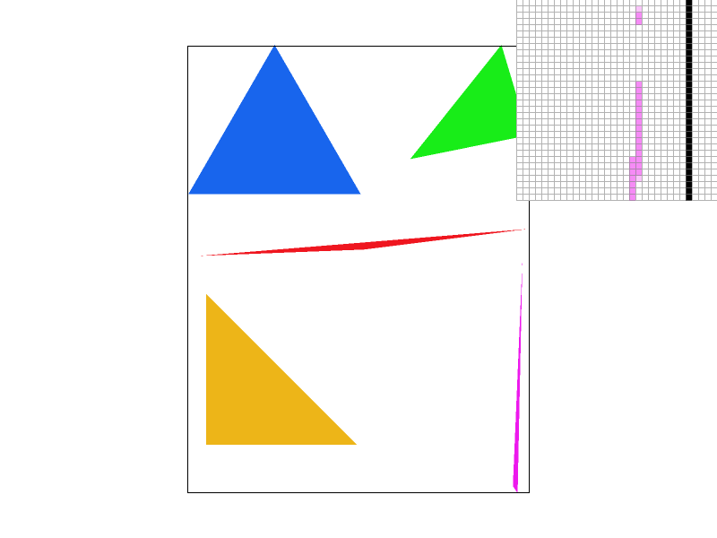
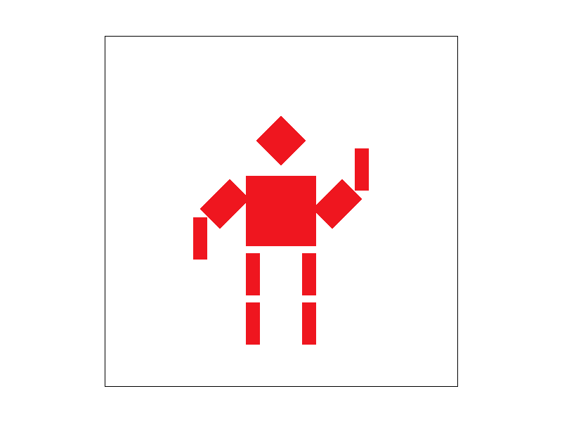
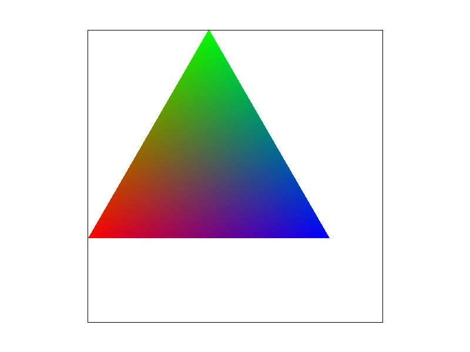
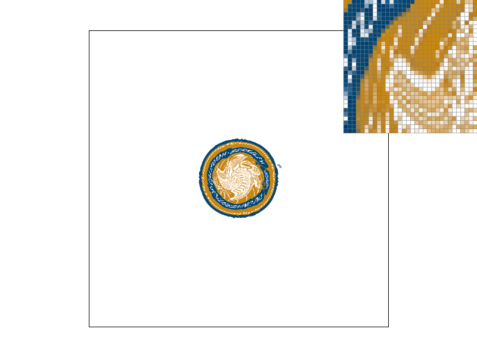
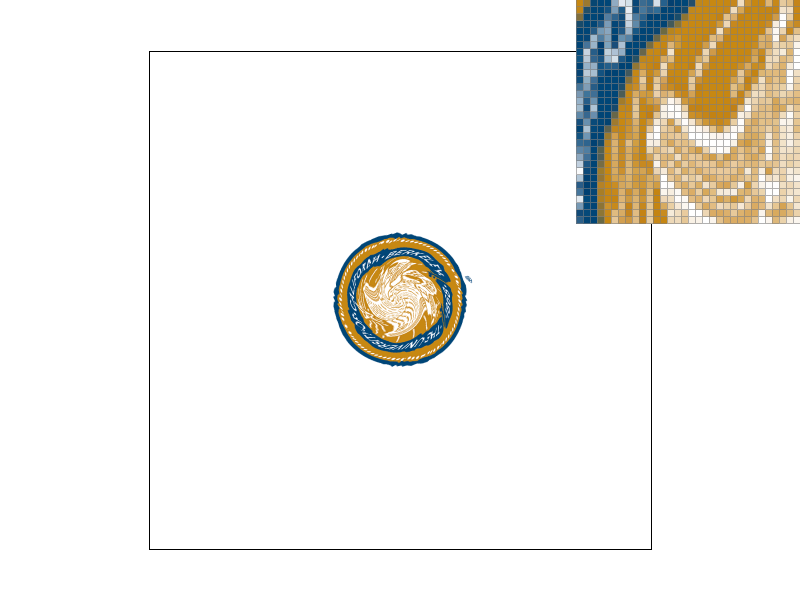
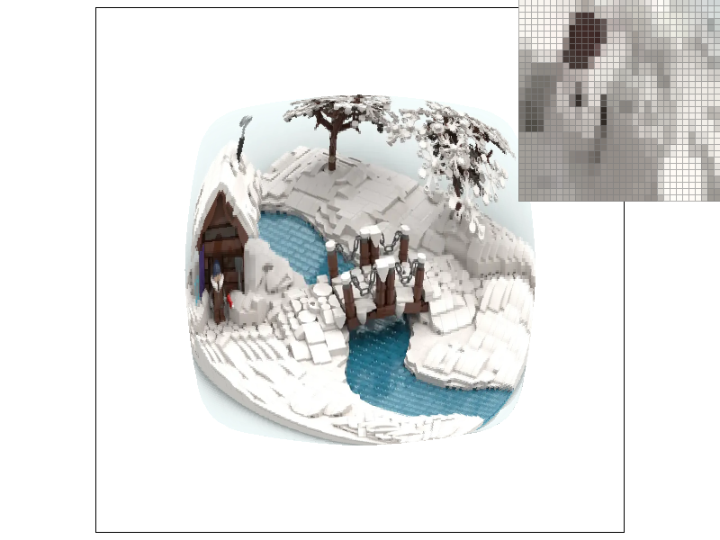

Overview
On a high level, I implemented many ways of taking triangle coordinates and picking the best color to display on my screen's pixels. This includes bounding boxes determining which coords to test for a triangle, super sampling, lerp-ing between pixel sampling, and level sampling between mipmaps. I also implemented transform matrices and barycentric coords to obtain u,v coords from x,y coords for mipmaps. The most interesting thing that I learned in my opinion is probably how to calculate and use barycentric coords. They seem like they would be fairly intuitive, but were actually fairly complex and used quite a bit towards the end of the assignment for mimaps and textures.
Section I: Rasterization
Part 1: Rasterizing single-color triangles
- Walk through how you rasterize triangles in your own words.
- I started by determining a bounding box around the triangle to narrow the search space of pixels to rasterize. To determine the bounding box, I took the min and max of the x and y coords among each of the 3 vertices. Then I iterated over every pixel in the bounding box, applying the point-in-triangle test to each of them.
- The point-in-triangle test consisted of determining the normal vectors of each edge and taking the dot product with the vector to the point in question from each vertex. If the result of the dot product for each edge is the same sign (all positive, all negative) then the pixel is within the triangle and should be colored in.
- Explain how your algorithm is no worse than one that checks each sample within the bounding box of the triangle.
- My algorithm is no worse because that is my algorithm. The naive solution would be to check every pixel that would possibly be put to the screen, and the algorithm I currently use is far better (unless the triangle covers the whole screen).
- Show a png screenshot of basic/test4.svg with the default viewing parameters and with the pixel inspector centered on an interesting part of the scene.
- Extra credit: Explain any special optimizations you did beyond simple bounding box triangle rasterization, with a timing comparison table (we suggest using the c++ clock() function around the svg.draw() command in DrawRend::redraw() to compare millisecond timings with your various optimizations off and on).
- My first version ran the dragon photo (test3) in 0.1 seconds.
- Pulling the normal vector calculations out of the inside() helper function brought it down to 0.085 seconds.
- Reordering vector calculations to allow for better instruction level parallelism (at the cost of slightly more memory) brought it down to 0.075 seconds.
- Some other optmizations could be made (tiled triangle traversal? incremental triangle traversal?) but this is as much time as I'm willing to spend.

Part 2: Antialiasing triangles
- Walk through your supersampling algorithm and data structures. Why is supersampling useful? What modifications did you make to the rasterization pipeline in the process? Explain how you used supersampling to antialias your triangles.
- I essentially had the same process as part 1, except that I now have a sample_buffer 1D array that acts as a step before the actual frame_buffer or the pixels on the screen. The sample buffer is essentially a higher resolution frame buffer that allows us to take more samples and average those samples for the real end result.
- Supersampling is an antialiasing technique in that it in practice blurs out sharp edges. It allows us to include more samples from really skinny parts of triangles that we might've missed otherwise. The end result is a blur placed over any jaggies.
- Show png screenshots of basic/test4.svg with the default viewing parameters and sample rates 1, 4, and 16 to compare them side-by-side. Position the pixel inspector over an area that showcases the effect dramatically; for example, a very skinny triangle corner. Explain why these results are observed.
- The pixel inspector was over the same spot in each of the images, but for whatever reason, there's a gap in between some pixels that moves with different sample rates. I (as well as a few others on Piazza) assume it has something to do with this triangle being so skinny and at just the right angle that the super sampling simply misses parts of it. Other than that though, the supersampling is successfully blurring out jaggies.

|

|

|
Part 3: Transforms
- Create an updated version of svg/transforms/robot.svg with cubeman doing something more interesting, like waving or running. Feel free to change his colors or proportions to suit your creativity. Save your svg file as my_robot.svg in your docs/ directory and show a png screenshot of your rendered drawing in your write-up. Explain what you were trying to do with cubeman in words.
- I made my robot have strong arms and wave one of its arms. In order to do that, I rotated both arms from their original positions and also applied a rotation to the forearms. I also increased the scale on the bicep areas.

Section II: Sampling
Part 4: Barycentric coordinates
- Explain barycentric coordinates in your own words and use an image to aid you in your explanation. One idea is to use a svg file that plots a single triangle with one red, one green, and one blue vertex, which should produce a smoothly blended color triangle.
- Barycentric coords essentially are a simple way to average between the 3 vertices of a triangle. There are only 3 colors specified for the above triangle, yet we're able to easily transition between them based on the pixel's coordinates in relation to each vertice.
- Show a png screenshot of svg/basic/test7.svg with default viewing parameters and sample rate 1. If you make any additional images with color gradients, include them.


Part 5: "Pixel sampling" for texture mapping
- Explain pixel sampling in your own words and describe how you implemented it to perform texture mapping. Briefly discuss the two different pixel sampling methods, nearest and bilinear.
- Pixel sampling essentially consists of converting barycentric x,y coords into interpolated u,v coords for the texture map. With the u,v coords, we can obtain texels from the mipmap texture and if we're on "nearest" mode, then we just grab the color of the nearest center of a texel. If we're on "bilinear" mode, we have to lerp the color btwn the 4 closest centers of a texel.
- Check out the svg files in the svg/texmap/ directory. Use the pixel inspector to find a good example of where bilinear sampling clearly defeats nearest sampling. Show and compare four png screenshots using nearest sampling at 1 sample per pixel, nearest sampling at 16 samples per pixel, bilinear sampling at 1 sample per pixel, and bilinear sampling at 16 samples per pixel.
- Comment on the relative differences. Discuss when there will be a large difference between the two methods and why.
- I was unable to find a huge difference in any of the images from Nearest to Bilinear. I chose the Berkeley seal image because it seemed to be the only image with a noticeable difference. Because Bilinear averages out the colors between texels, it's generally blurrier. However, increasing the sample rate effectively does the same thing and so there's practically no difference from Nearest to Bilinear at a sample rate of 16. If anything, the Bilinear on top of sample rate 16 is a computational waste because we're not super sampling the texture so we're grabbing a lot of the same texels.
- The most noticeable differences will come from images with jaggies in them.
|
|

|
|

|
|
Part 6: "Level sampling" with mipmaps for texture mapping
- Explain level sampling in your own words and describe how you implemented it for texture mapping.
- Level sampling is essentially the process of taking adjacent samples and measuring the distance between them to pick a mipmap that results in the least amount of aliasing. To implement this, I took 3 different positions of x,y x+1,y x,y+1 and used them to calculate barycentric coords to use with the u,v coords. From there, I'm able to calculate the best D mipmap level using the largest differences between the adjacent samples (in terms of u,v). I was also required to implement options that 1) used only the 0 mipmap level, 2) picked the nearest valid mipmap level, and 3) lerp-ed between the two closest mipmap levels.
- You can now adjust your sampling technique by selecting pixel sampling, level sampling, or the number of samples per pixel. Describe the tradeoffs between speed, memory usage, and antialiasing power between the three various techniques.
- Based on my observations, level sampling appears to do the most antialiasing for the least compute time, but I think this is mostly because the Mipmaps are precomputed and those take up more storage space than pixel sampling and super sampling.
- Pixel sampling does take additional time, but does a good job of smoothing out images since it essentially takes the average of the 4 closest texels. This does use memory, but it's reused between samples.
- I believe super sampling takes the longest time of the three methods, but has the most potential power since it can sample up to 16 times per pixel in our implementation. This uses a lot of memory, but not as much as storing precomputed mipmaps. The antialiasing is relatively good.
- Using a png file you find yourself, show us four versions of the image, using the combinations of L_ZERO and P_NEAREST, L_ZERO and P_LINEAR, L_NEAREST and P_NEAREST, as well as L_NEAREST and P_LINEAR.
|
|
|

|

|
Section III: Art Competition
Part 7: Draw something interesting!
Did not have time to.
Linked to Project 1 webpage